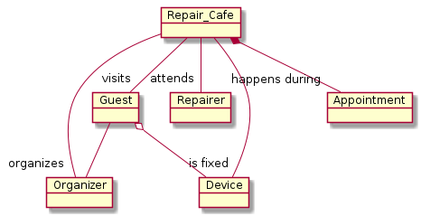
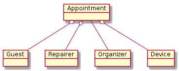
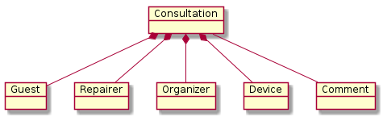
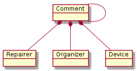

Objects
A device is an object owned by a guest which has some issue. To get support for fixing the issue, a guest provides the information about the device and requests a repair appointment during a repair_cafe.

A repair_cafe happens at a specific date and location. It's an event which consists of appointments of repairers with guests to fix a device.
To organize a repair_cafe, a organizer needs to know which repairer will attend a repair_cafe, to schedule repair appointments.

In case of ambiguities, a organizer or a repairer can raise a consultation request. This consultation request is sent to the guest to get the needed information. In addition, a organizer or a repairer can add an comment to a device.


Repair_Cafe
A repair_cafe is a event happening at a specific date at a specific location. During a repair_cafe appointments of guests with repairers happens to fix broken devices.
Fields
- location: Char (200) -- location of the event
- address: Char (200) -- address where the event happens
- event_date: Date -- date when the event happens
- repairer: many to many -- will attend the event